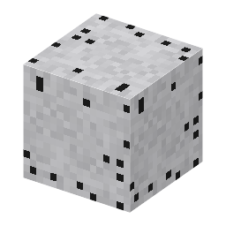

①子ども 浜辺の黒い砂。磁石を近づけるとくっつく。
③大人 たたら製鉄では砂鉄と木炭を交互に入れて炉で燃やし、一酸化炭素で還元する：Fe3O4 + 4CO → 3Fe + 4CO2。鉄は全部は溶けず、炉の底に鉧（けら：鉄のかたまり）ができ、そのいちばん良い部分が玉鋼になる。
④ガチ たたらの1回の操業（三日三晩の「一代（ひとよ）」）で、砂鉄約10トンと木炭約12トンを使い、鉧は約2.5トン。今も島根県の「日刀保たたら」が日本刀の材料のために冬に操業している。
（作り方のレシピは無い：拾う・掘る・ほかの方法）
（このアイテムを使うレシピは無い）